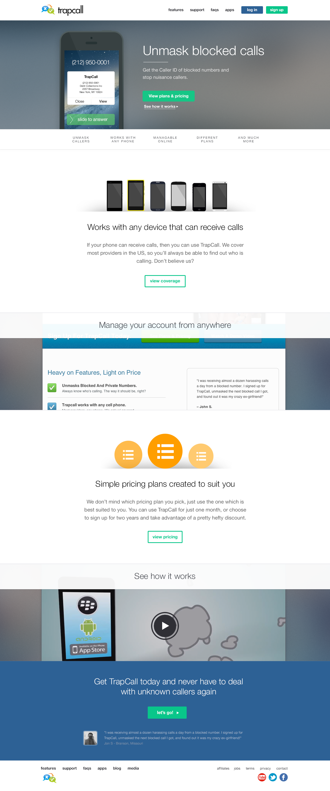
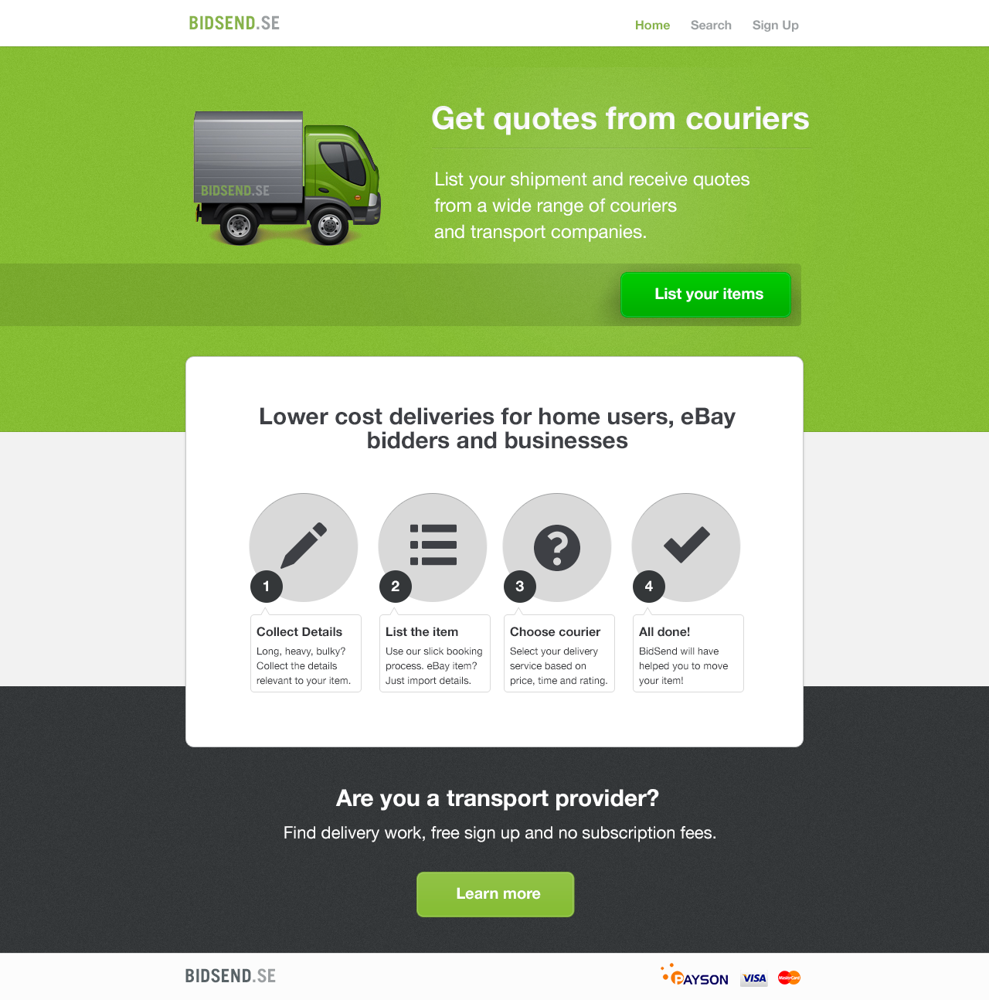
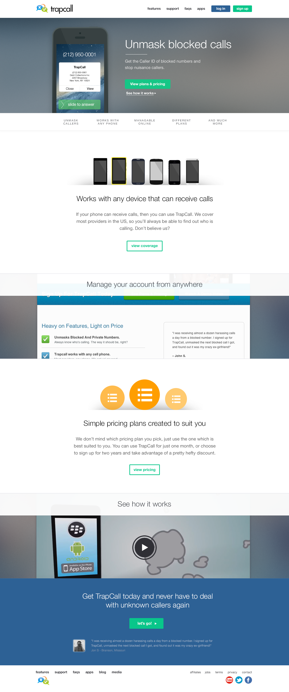
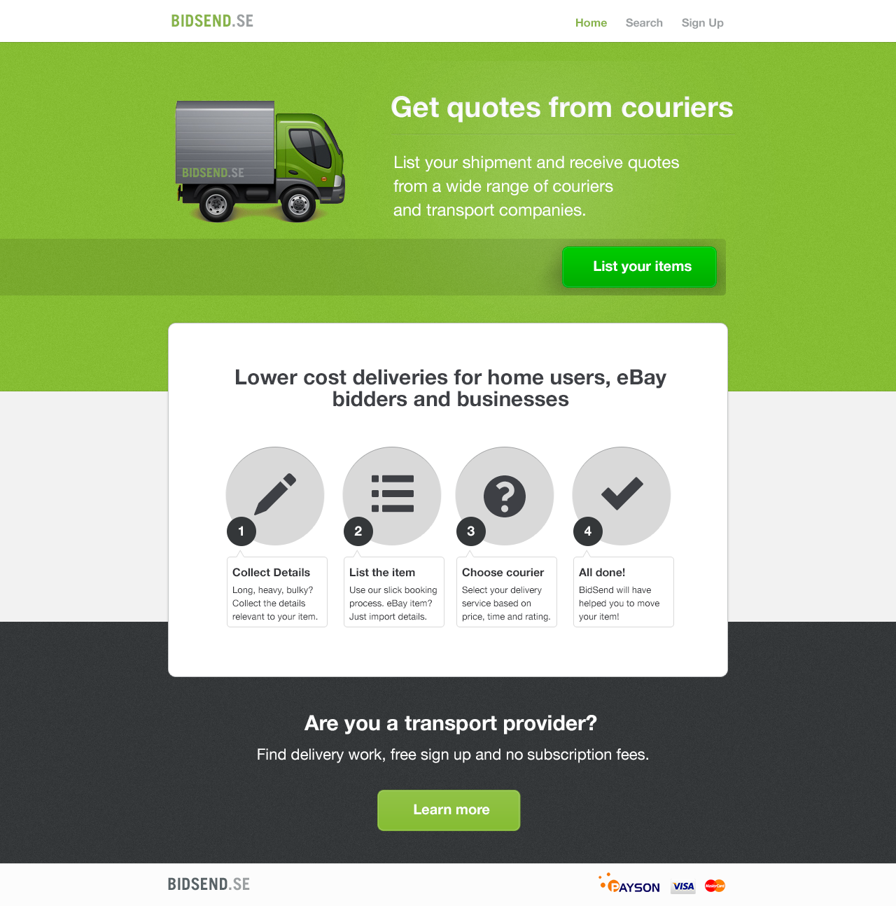
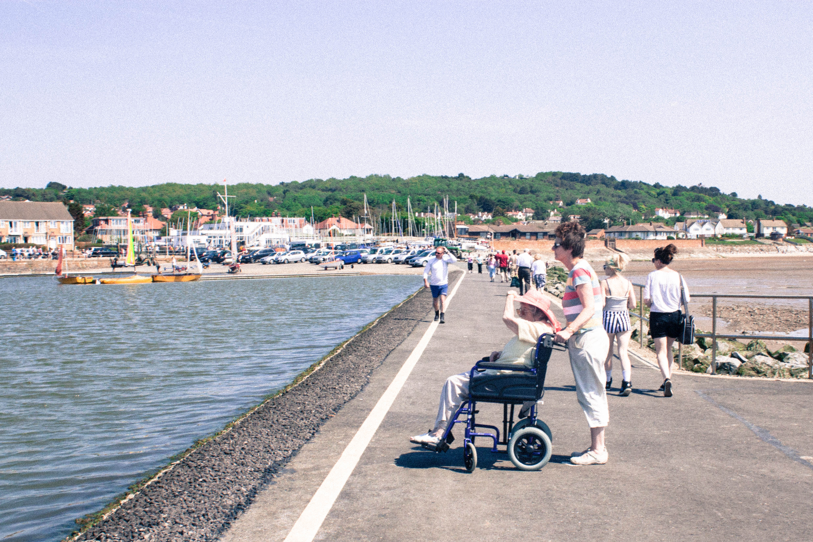
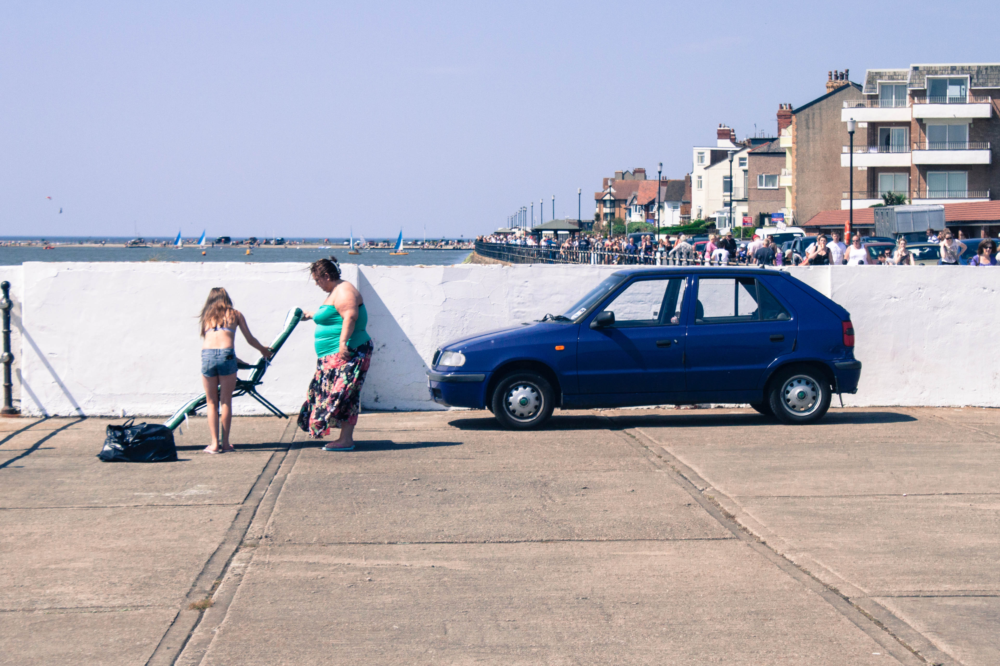
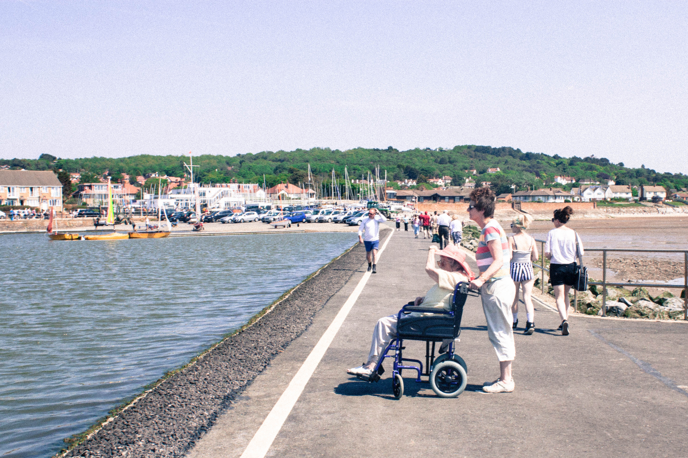
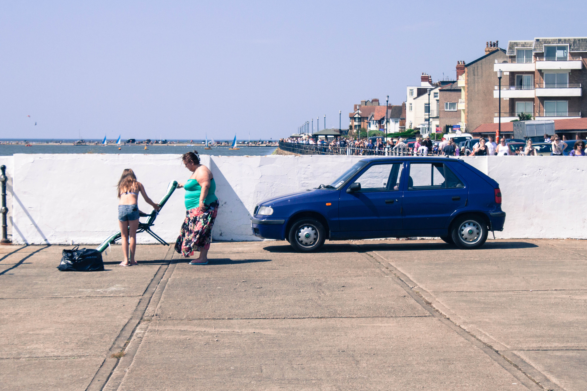

I've put this together to express the different things that interest me and motivate me. I find that swathes of links inside emails aren't very good at expressing my interests, past work & motivations.
Doodles
Over the past few years I've filled a book every two months or so with doodles, notes and snippets. Whilst they're not awe-inspiring they've always been a fun way to express myself, and every so often I like to look back on them - mostly because I get to see how embarassing I've been.


Freelance selection
Here are some bits of freelance work that I've done and that I'm happy with. It includes artwork for a couple of small bands, marketing material for a US based product and app design for a delivery startup, dating a couple of years back.
 




Side Projects
I don't have very much in the way of side projects, as a result of commitments with racing and freelancing, but have had the following projects:
Tumblr.carlfairclough.me
Aha! A cliche Tumblr blog! I just collect things that I appreciate in here. Quotes, Design, Bikes, Cars, Architecture. It's a visual dumping ground for me and I enjoy it as an outlet, somewhere where I can show appreciation for different kinds of work. Take a look at it.
File-based CMS
I spent a short while building a PHP based CMS which uses static files for content, thus mitigating the need for databases to be in sync (which has been a massive issue when developing updates, staging updates, and releasing updates). This project got put on hold after I found an existing CMS that operated in an almost-identical way (Kirby). Check out the unfinished project on GitHub.
Straighblock.cc
Planned to set up a small cycling team with the founder of Deaf Pigeon, to target races in Europe and be backed by sponsors. Plans included proposal documents for sponsors and pitch ideas. Kit design was also something that I valued as a part of this project - take a look at the small pinterest board for it.
Sixo.co
Myself and many of my friends based both in the North-West have a skill-set that when combined, equals that of a small agency. The domain has been purchased with a view to potentially setting up a design collective, as we all freelance in our spare time. The name was inspired by the Vitsoe 606 shelving system.
Photos
Here is a collection of photos from the past few years. I did use a DSLR for a while until I realised that I used my iPhone way more. Take a look at my Instagram account to see more photos, and probably find out a lot more about me.


 





Influences
I like to think that I call on a fairly broad range of influences, however I've always been massively influenced by Futurism, Modernism and the Arts & Crafts movement, as well as the other related movements from that era. The first things first manifesto is something that I've always massively agreed with. It's a major reason behind why I want to work on something that makes people happy, why I've chosen to work mostly on digital products, and why I've turned down offers from Agencies.
{kind=link}
Work wish-list
There are a few different things that have caught my eye and that I've wished to work on:
Strava
I'm obsessed with it, and rambled on enough about it when we met.
SpaceX
Who wouldn't want their work helping to get people up into Space?
Rapha
Rapha probably have one of the strongest brands around, and whilst being very expensive and very exclusive, they make cycling seem like an appealing sport/activity, rather than an odd hobby. Their clothing is top quality too, which makes their marketing feel more honest.
Watsi.org
Watso is a tool which allows people to fund healthcare for the disadvantaged. It's an incredibly valuable service despite the fact that I think that it should never have to exist.
Vine
Even though Instagram stole a lot of its thunder, Vine is fun. Working on fun things is fun. Who wouldn't want to work on that?